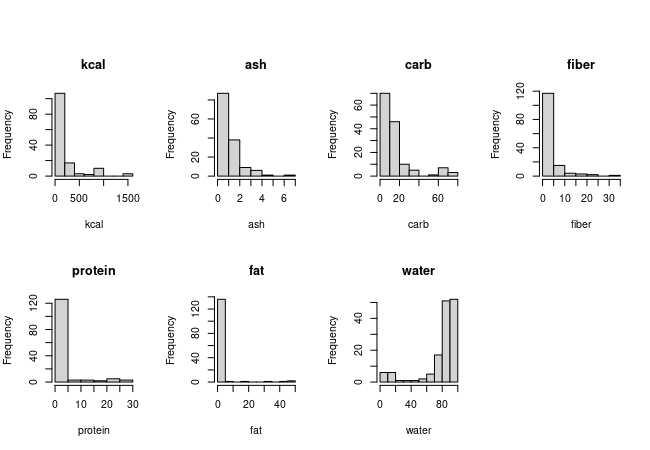
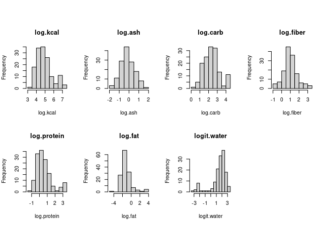
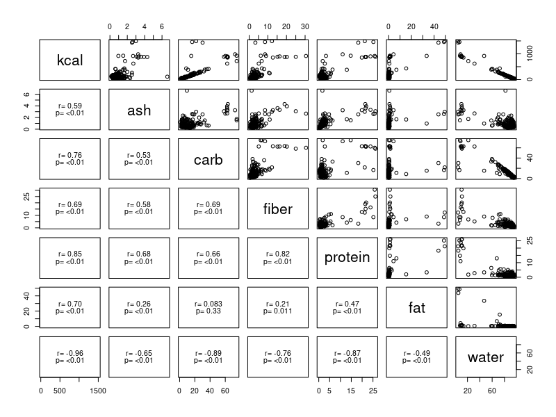
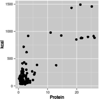
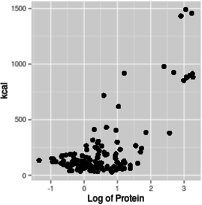
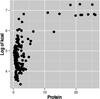
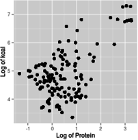

Model selection is the process by which we choose the best statistical representation of the structure in our response data. Structure refers to the predictable patterning in the response data, which can be due to anything that is not purely random variation between individuals. A major cause of structure in response data (and the part of the structure that we are most interested in scientifically) are the fixed effects of predictor variables.
Model selection is not always a necessary part of data analysis. For example, when all of the predictors in a model are experimentally interesting, are orthogonal by design, and have treatment levels that can be randomly assigned to subjects, then model selection becomes very simple - a single statistical model that matches the experimental design is the appropriate model, and elaborate model selection is not really needed. Scientists who only ever analyze experimental data that has these properties often think of their linear models just as tests of effects of each experimental treatment, and the fact that they are building a model is something they don't really need to think about.
However, when we are conducting exploratory analysis of data sets with many possible predictors, which are not independent of one another (and may be strongly correlated), which may have complex inter-dependent relationships with the response, and with subjects that can't be randomly assigned the values of their predictors, then the fact that we're fitting a model to our data becomes important, because there are many possible models we could select, and our interpretation of the data depends on the model we use. With studies subject to these complications we definitely need to use the principles of model selection so that we base our understanding of our biological system on a good, informative model.
Field ecologists that routinely work with observational data will nearly always need to approach their analysis as a model selection exercise. However, even lab-based experimental work can benefit from this perspective if it involves nuisance variables (e.g. observer effects, growth chamber differences), covariates that may not be orthogonal with other predictor variables (e.g. mass of individuals, body temperature fluctuation), and factors that can't be randomly assigned to subjects (e.g. sex, strain).
Today we will focus on using model selection to find the best set of predictors for the caloric content of plant-based foods, using adjusted R2 as the criterion. Adjusted R2 is better than multiple R2 for model selection, because it balances the fit of the model to the data against the model's complexity.
Model selection with multiple predictors
We will use model selection today on a small selection of foods from USDA's massive National Nutrient database. The database has nutrient information on over 67,000 foods, but I've selected 142 plant-based foods with which to model caloric density (kcal of a 100 g sample) as a function of the the food's chemical composition.
Start a new R Studio project for today. The data can be downloaded here, and the R markdown file is here.
When you import the data make sure you use data.frame(read_excel()) to convert the tibble into a data frame, or some of the graphing steps below won't work correctly. Import the Excel file into a data set named food, and open it - you will see that the variables are:
- food - the name of the food
- kcal - kilocalories in the sample, to be used as the dependent variable for all models.
- ash - weight of inorganic residues (g) that are left behind when caloric content is measured in a bomb calorimeter.
- carb - grams of carbohydrate.
- fiber - grams of indigestible plant material, mostly cellulose, in the food. Fiber is not digestible by humans, and does not contain any caloric value.
- protein - grams of protein.
- fat - grams of fat
- water - grams of water. Water does not contain any caloric value.
Each of the possible predictor variables also has a transformed version, called log.variable.name for each variable but water, which is called logit.water.
Before any model selection begins, it's a good idea to look at the data to start developing an understanding of the patterns and potential issues.
1. First, we will make histograms of the variables. To save space we'll put them in an array, like we did for our residual plots in the model criticism exercise, but we don't want to plot all 14 of the variables together or we won't be able to see them. We'll do a separate set of histograms for the un-transformed variables, and for the transformed variables.
In the chunk plot.untransformed.histograms of your Rmd file, set up the layout - we'll have 7 variables to plot in each set of histograms, and it's good to give them a little height so we can see the shape of the distribution better, so we'll use 2 rows and 4 columns to fit them all in:
oldpar <- par()
par(oma = c(0,0,3,0), mfrow = c(2,4))
We can take advantage of lapply() to get the graphs all created with a single command - first we need a list of the variables we want to plot, which will be the un-transformed variables for this first set (next row of the same chunk):
untrans.var <- c("kcal","ash","carb","fiber","protein","fat","water")
Then we can use lapply() on this list to make our 7 histograms with one command - these graphs don't need to be publication quality, they are just to guide our model building decisions, so the R base graphics command hist() will do the job:
lapply(untrans.var, FUN = function(x) hist(food[ , x], main = x, xlab = x))
You should see these histograms:
The lapply() command takes the list of variables, untrans.var, and works through the variable names one at a time. The FUN = function(x) statement defines the plotting command we used, which is hist(data.set[ , name.of.variable], main = title.of.plot, xlab = label.on.x.axis). The value x comes from the untrans.var list, so it is just the name of a variable. If we type the command in the Console:
hist(food[,"kcal"])
you will see the kcal histogram in the plot window. We can add the title and x-axis label with (still in the Console):
hist(food[,"kcal"], main = "kcal", xlab = "kcal")
This gives us the same histogram as the first one in our lapply()-generated set - all we do in lapply() is to define the variable name we will get from untrans.vars as x, and then write the command to use x everywhere we would use "kcal" from the console.
You may notice that the header block in the code chunk reads {r plot.transformed.histograms, results='hide'} - the results='hide' part tells R to not include all the numerical output from hist(), and just plot the graphs themselves. The commands work without this setting, but the output includes pages of output you don't need to look at unless it's included.
So, back to the histograms - nothing looks remotely normally distributed, so we can look at the transformed variables next. Go ahead and try to do this in chunk plot.transformed.histograms of your Rmd file. If all goes well you should see this:
The transformed versions are obviously much closer to normally distributed, so we might expect that transformations will be needed. The logit transformation was applied to water data to produce water.logit. The logit of a proportion or a probability is the log odds ratio, or ln(p/(1-p)), where p is the proportion of the sample that is water (since the sample is 100 g, p = water/100). The logit transformation works well for proportions or percentages converted to proportions, provided that there are no 0% or 100% values.
To be clear, the distribution of the data isn't as important as the fit of the model to the data and the distribution of residuals, but it's uncommon for strongly non-normal variables to work well with linear models, and spending some time looking at the individual variables can help us anticipate steps we'll need to take later.
Now that we know something about the distribution of the individual variables, we can see how they are inter-related.
2. Make a scatterplot matrix of all of the variables. Remember, look at your data! It's good to start every analysis with some graphs to get an idea of what the relationships look like, and to spot any possible data entry errors, or potential non-linearities or other issues that might be present in the data set.
Since the upper triangle and the lower triangle of the scatterplot matrix are mirror images of each other, we can make better use of the lower triangle by putting the correlation coefficients and p-values in them. R allows us to define functions and then use them within the session. Run the panel.cor.function chunk to get the function added to your workspace (you should see it in the Environment tab if all goes well).
Since we will either use kcal or log.kcal as the response variable we can make two different sets of scatter plots that include just one or the other version of kcal. To make the version with the un-transformed version of kcal use (in the kcal.untrans.pairs.plots chunk of your Rmd file):
pairs(food[,untrans.var], lower.panel = panel.cor)
Having made a list of untransformed variables when we made histograms, we can use it again here to identify the variables we want to include in our scatterplot matrix. We need to load the biol531 library because the panel.cor() function is in it, which we use to put correlation coefficients and their p-values in the lower triangle of our scatterplot matrix. You should see:
If you have a hard time seeing your own pairs plot you can use the "Display in own window" button in the upper right corner of the output block, , to get the scatterplots to pop out into a larger, resizable window.
The pairs() command makes a scatterplot matrix with names of the variables in the diagonal. Variables are used as the y-axis for the row they appear in, and the x-axis for the column they appear in. For this example, kcal is the y-axis for the first row of scatterplots, and you can use that first row of graphs to see how kcal is related to all of the the predictor variables, one at a time. The relationship between the predictors (and thus how much of a problem with confounding to expect between them) is illustrated by the rest of the scatterplots. The lower triangle also has information about all of the combinations of the variables, but the panel.cor() function was used to put the correlation coefficient and p-value for the correlation in each of these. The correlations of each predictor with kcal is in the first column, and the correlations between the predictors is in all the other positions.
Convenience vs. clarity
Frequently, there are multiple ways of accomplishing the same thing in R, and deciding what approach to take is arbitrary to some extent - if the end result is the same, does it really matter how you get it done?
But, some of the different ways of accomplishing a task differ in their level of convenience to you as the analyst, vs. clarity about what the code is doing. For example, we could have written our pairs() command this way:
pairs(food[ , 2:8], lower.panel = panel.cor)
This is convenient because the numbers 2:8 refer to columns 2 through 8 of the food data set - using this method gets the plot made without having to make a list of variables at all. But, it has the disadvantage of being opaque to somebody reading your code who does not have the data set in hand, because the names and column numbers appear nowhere in your Rmd file. You may not yet have had the embarrassing experience of opening up an Rmd file, knowing that you wrote all the code in it, and not being able to remember why you did what you did, but that day is coming! Using approaches that are hard to understand make it more likely this will happen to you.
By far the clearest, most "self-documenting" way to write the command would be:
pairs(food[ , c("kcal","ash","carb","fiber","protein","fat","water")], lower.panel = panel.cor)
This style is self documenting in that it's perfectly clear to anyone who reads this line of code what you're plotting. But, the disadvantage is that it is more typing, and is an opportunity for typos (and the elevated blood pressure that goes with them). Also, if you use this approach and realize you should have included another variable in the list, you would need to update the list in every line of code in which you used this list of variables.
None of these approaches is wrong, and they all work. Personally, I have gravitated toward the approach you used above, in which we first make a list of variables and then use it as an argument in commands, particularly when the same list is used more than once. It's really useful to be able to change one element in the list in one line of code, and then re-run all the code that uses the list as an argument to update them, rather than having to re-write every line of code that uses the same list with the new element. In other words, if we decided to drop protein from the list, we could have just re-written the line in which we made the untrans.var object, and then re-run the histograms and pairs plot to update them with the new list.
When a list of variables is only used once, like will be the case in our next two pairs() plots, I just write the list of variable names so that the code is easier to understand. I used to prefer using column numbers because of the convenience, but over time have found the lack of clarity to be a liability, and I don't use that method very often anymore.
We can see how kcal relates to the log-transformed versions of the predictors with (in chunk kcal.trans.pairs.plots of your Rmd file):
pairs(food[,c("kcal","log.ash","log.carb","log.fiber","log.protein","log.fat","logit.water")],
lower.panel = panel.cor)
You'll see that several of the relationships look more linear using transformed predictors.
If we compare log.kcal to the un-transformed predictors with (in the log.kcal.untrans.pairs.plots chunk of your Rmd file):
pairs(food[,c("log.kcal","ash","carb","fiber","protein","fat","water")], lower.panel = panel.cor)
Now, make the pairs plot that compares log.kcal to the transformed predictors (in the log.kcal.trans.pairs.plots chunk of your Rmd file).
2. Pick the scale to use for the variables. Now that we have all of the scatterplot matrices, let's put them to use. Our first concern is to make sure our predictors are linearly related to the response, so look at each of the scatterplot matrices first to see which of the first rows of scatterplots gives us relationships that look the most linear.
Secondly, we should pick versions of the variables we think will let us meet the distributional assumptions of GLM. There is a lot we can't tell from pairs of variables plotted against one another, but to the extent that the plots give us an even distribution of data along the x-axis, and what looks like an even distribution of data along the y-axis, we will have a better chance of meeting GLM assumptions when we use the variables in a model.
Based on these initial considerations, you'll see that the most linear relationships with the best data distributions come from the combination of log.kcal and transformed predictors. This matches what we saw with our histograms, which gave us much more bell-shaped distributions for transformed variables than for untransformed versions. Consequently, we will use the log.kcal column as our response variable, and the transformed versions of all the predictors in our models.
We are going to be working with models that have a log-transformed response as well as log-transformed predictors today. This gives us a good excuse for learning about how to interpret models with log transformed predictors, responses, or both.
When you log-transform both the response and predictor variables for a regression analysis as we will be doing today, the model you are fitting is:
log y = b log x + log a
Back-transforming both sides of the equation to the linear scale that the data were measured on gives us a power function:
y = axb
The value of y being predicted is the geometric mean of kcal.
A model with the response on a log scale, but with the predictor on a linear scale, like this:
log y = b x + k
became an exponential function when it's back-transformed:
y = a(ebx)
Notice that these functions differ in where the x-variable is placed - in an exponential function the x variable is in the exponent for the base of the logarithm, whereas power functions use x as a base and raise it to an exponent. Since we fit the model with log y as the response, this equation is also predicting the geometric mean on the original, linear data scale.
The switch from using the letter k to the letter a is to avoid having a log-term on the right side of the equation. The letter k is used as the intercept of a straight line equation, and the intercept is a constant that is estimated from the data. After back-transforming a is also a constant estimated from the data, but it is a constant multiplier instead of being additive. The intercept, k, is equal to log a, so it is equally correct to write the straight line equation as log y = b x + log a, but since log a is just a constant, and we're saying that the right side of the equation is on a linear scale, it's confusing to have log a there.
Finally, we can log-transform the x variable but keep the y-variable on a linear scale. The model we used was:
y = b log x + k
This model is predicting the a arithmetic mean of y, it's just using the log of x to do it. If you back-transform this model it becomes a logarithmic function:
ey = axb
With this introduction as background, you can use graphs that have log-scale axes to get an idea of the form of the functional relationship between predictor and response. For example, if you make a scatterplot of kcal (y axis) against protein (x axis), using linear axes for both, using a log x-axis with a linear y-axis, using a log y-axis with a linear x-axis, or using log axes for both x and y, you get graphs like these:
If your data look linear when you use these axis scales...
Linear x and linear y
Log of x, linear y
Log of y, linear x
Log of x and log of y




...the relationship between y and x is:
Linear relationship
Logarithmic relationship
Exponential relationship
Power function relationship
y =bx + a
ey = axb
y = a(ebx)
y = axb
Based on these graphs, you get the most linear relationship on the graph from log-transforming both protein and kcal, so the relationship between protein and energy in food is a power function.
Now that we have established that we should be using the log of kcal, and the transformed versions of all the predictor variables, we can start fitting models.
We will start by fitting each of the single predictor models to give us a baseline for comparison, and then we will fit some multiple regressions with combinations of predictors to see if the added complexity improves the adjusted R2 enough compared with the single predictor models to justify using more than one predictor. Since adjusted R2 balances fit and complexity, using adjusted R2 as the basis for picking the best model will help us avoid building excessively complex models.
3. Fit all the one-variable models. So far we have done all of our model building by running an lm() function and assigning the output to an object. There's nothing wrong with this approach, but when you have multiple models to compare with one another it is helpful to take advantage of some of R's built-in data structures that help you stay organized. To help us keep track of our models we can put each of them in an R list. Once we have all the models we want to compare in the list, we can use commands designed to do the same thing to each element of a list (such as lapply() and sapply()) to pull out what we want from each model we store in the list.
First, let's make an empty list we can add models to (in the make.model.list chunk of your Rmd file):
models.list <- list()
The list() function with no arguments makes a list with nothing in it that we can add our models to as we make them. If you find models.list in the Environment tab you'll see it's shown as a "List of 0", with no triangle next to it to reveal summary information - there's nothing to summarize yet.
To add the first model to models.list use the command (chunk add.single.predictor.models.to.list in your Rmd file):
models.list$log.ash <- lm(log.kcal ~ log.ash, data = food)
This command has a familiar part (the lm() command is what we have been doing all semester long), but the assignment to an object is a little different. We have used a similar method to assign new columns to a data frame, but this time the models.list$log.ash statement on the left side of the arrow is creating a named element in models.list, which we are assigning the fitted log.ash model to. If you look at the models.list in the Environment tab it now shows it as being a list of 1, and if you open it using the triangle next to the models.list object you will see a summary of the fitted model stored in log.ash. You'll see that log.ash is shown as a "List of 12", because fitted models are themselves R lists - we can store any object in an R list, including other lists.
A little more on using information stored in lists... given that we can store objects in lists, we would like to be able to use our usual commands on them to get the summary statistics and ANOVA tables we need to interpret the models. This is simple to do, we just need to use name.of.list$name.of.stored.object to refer to the fitted model objects, instead of just the name of the fitted model alone.
To see what is in the models.list object, you can type in the console:
models.list
which shows you the contents of the list:
$log.ash
Call:
lm(formula = log.kcal ~ log.ash, data = food)
Coefficients:
(Intercept) log.ash
4.9773 0.5827This shows the name of the element (with a dollar sign before it, $log.ash), and then the print() output for the object. We see this same print() output any time we just type the name of a fitted model in the console, and we can get it without the name of the object using (in the console):
models.list$log.ash
and you will see:
Call:
lm(formula = log.kcal ~ log.ash, data = food)
Coefficients:
(Intercept) log.ash
4.9773 0.5827This is just the output for the lot.ash object, and since we specifically asked for this object with our command we do not get the object name reported this time.
If we ask for a summary() of the models.list object we get a summary of its properties as an object (in the console):
summary(models.list)
gives us:
Length Class Mode
log.ash 12 lm listThis is a summary of models.list, in that it displays what is stored in the list, but it doesn't summarize the model that's in log.ash. If what we want is the summary of the log.ash object we would name it in the summary() command (in the console):
summary(models.list$log.ash)
which shows us the summary output for this fitted model:
Call:
We can add as many models as we want to this list, and access each one in the same way.
lm(formula = log.kcal ~ log.ash, data = food)
Residuals:
Min 1Q Median 3Q Max
-1.73359 -0.63291 0.04934 0.55279 1.86214
Coefficients:
Estimate Std. Error t value Pr(>|t|)
(Intercept) 4.97726 0.06852 72.64 < 2e-16 ***
log.ash 0.58268 0.09398 6.20 5.96e-09 ***
---
Signif. codes: 0 ‘***’ 0.001 ‘**’ 0.01 ‘*’ 0.05 ‘.’ 0.1 ‘ ’ 1
Residual standard error: 0.8012 on 140 degrees of freedom
Multiple R-squared: 0.2154, Adjusted R-squared: 0.2098
F-statistic: 38.44 on 1 and 140 DF, p-value: 5.959e-09
Okay, returning to our regularly scheduled program... add the next model of log.kcal ~ log.carb to the list use the command:
models.list$log.carb <- lm(log.kcal ~ log.carb, data = food)
If you type models.list you'll see that you now have two named elements, one called $log.ash and one called $log.carb, each containing the fitted model you assigned.
Keep going - add models to the models.list for log.fiber, log.protein, log.fat, and logit.water. Watch the labeling - make sure you assign each model to a different predictor name in the models.list or you'll over-write one model with another. When you're done you should have six models in the list (check in your Environment tab that the models.list object is a List of 6).
If you assign the wrong model to the list, but the label you used is okay, just assign the correct model to the same name again and the right model will over-write the wrong one. If you assign a model to the list with the wrong label, you can delete it using the command:
models.list$the.wrong.label.you.used <- null
and then you can add the model back in using the correct label.
4. Extract the r.squared and adj.r.squared from every model. Once you have a list with a set of six single-predictor models in it we can take advantage of some commands that will do the same command on every named element of a list, which will allow us to extract the output needed to find the best model. The command is a little complicated, so we'll build up to it by typing the following several commands into the Console until we are getting what we want, and then we'll put the final, correct command in your Rmd file.
For example, we can use lapply() to get summary() output from each model (in the Console):
lapply(models.list, summary)
This command gives us summary output for each model in models.list. Used this way lapply() is simple - it takes a list as its first argument, and the name of a built-in function to apply to each named element as the second. This use of lapply() is equivalent to using summary(models.list$model.name) once for each model in the list, but with lapply() you just need to issue the command once to get all of them.
Big improvement already - we now have summary output for every model, which includes the R-squared, adjusted R-squared, F, and p-values each model, which is all the information that we need. However, it's not reported in a very convenient format - we would need to go through and record all of these values by hand. Doing this task by hand is tedious and error-prone, and resembles work, which is what computers are supposed to do for us! To save time and avoid typos it is better to figure out how to construct a function that will give us what we need in a nice, compact, organized form.
First, we need a little information about the summary() output to know how best to extract the statistics we need. If we're lucky these quantities are named elements that we can pull out of the fitted model output. We can get a report of the named elements in an object by using the names() command - just to see how the summary() output is structured, we'll use names() on the summary() of the first model in models.list, like so (still in the Console):
names(summary(models.list$log.ash))
You will see that the named elements are:
[1]
"call"
"terms"
"residuals" "coefficients"
"aliased"
[6] "sigma"
"df"
"r.squared" "adj.r.squared" "fstatistic"
[11] "cov.unscaled"
The named elements include "r.squared", "adj.r.squared", and another called "fstatistic". We can confirm that these elements contain the values we need with the command (in the Console):
summary(models.list$log.ash)$r.squared
which should give you:
[1] 0.2154293
which is indeed the R2 for the log.ash model.
To use this summary() command in our lapply() function we can define our own function to be applied to each named element, like so (in the Console):
lapply(models.list, FUN = function(x) summary(x)$r.squared)
This will give you output like this:
$log.ash
[1] 0.2154293
$log.carb
[1] 0.8356839
$log.fiber
[1] 0.4676565
$log.protein
[1] 0.3557148
$log.fat
[1] 0.3620739
$logit.water
[1] 0.9109813
This is fine, but we can get this output into vector of numbers, labeled by the name of the model, with a different version of the apply() command, called sapply() - in the Console:
sapply(models.list, FUN = function(x) summary(x)$r.squared)
which gives us:
log.ash
log.carb log.fiber log.protein
log.fat logit.water
0.2154293 0.8356839 0.4676565
0.3557148 0.3620739 0.9109813
The only difference between sapply() and lapply() is that lapply() output is a list, and sapply() gives output is a vector - they each apply the function specified to each named element of models.list.
This takes care of getting our r.squared values from each model, so let's put this into a command in our Rmd file (chunk r.squared of your Rmd file):
sapply(models.list, FUN = function(x) summary(x)$r.squared) -> r.squared
We can use this same approach to get the adj.r.squared (in the adj.r.squared chunk of your Rmd file):
sapply(models.list, FUN = function(x) summary(x)$adj.r.squared) -> adj.r.squared
We can now combine the r.squared and adj.r.squared vectors into a data frame to make them easier to interpret (in the make.adj.r.squared.table chunk of your Rmd file):
data.frame(r.squared, adj.r.squared)
which should give you:
r.squared adj.r.squared
log.ash 0.2154293
0.2098252
log.carb 0.8356839 0.8345102
log.fiber 0.4676565 0.4638540
log.protein 0.3557148 0.3511128
log.fat 0.3620739
0.3575173
logit.water 0.9109813 0.9103455
You'll see that the adjusted R2 are all very similar to the non-adjusted versions, because these are all single variable models. Of these, logit.water has by far the highest adjusted R2 - if we were restricted to picking the best single predictor model, it would be the one with logit.water.
But, we are not restricted to using a single predictor, and it's
possible we can improve. We will fit some more complex models next for
comparison.
5. Fit a model with log.ash and log.protein. The variables log.ash and log.protein are highly correlated. If the correlated part of these predictors is the part that explains variation in log.kcal, then including them both at the same time would not improve the adjusted R2 compared to including just one or the other of the variables.
Add a model (in chunk log.ash.log.protein.model) that uses log.ash + log.protein as predictors to your models.list, and name it log.ash.log.protein (that is, you'll assign it as models.list$log.ash.log.protein).
In the same code chunk, run your sapply() commands to get r.squared and adj.r.squared extracted (just repeat the commands, the old versions of r.squared and adj.r.squared will be replaced with the new ones that include your new log.ash.log.protein model).
Then, in the same chunk, make your data frame of r.squared and adj.r.squared again - you should see:
r.squared adj.r.squared
log.ash
0.2154293 0.2098252
log.carb
0.8356839 0.8345102
log.fiber
0.4676565 0.4638540
log.protein
0.3557148 0.3511128
log.fat
0.3620739 0.3575173
logit.water
0.9109813 0.9103455
log.ash.log.protein 0.3557625 0.3464929
Any time you add variables you'll get an increase in the unadjusted R2 - you can see the unadjusted R2 is a little higher than either the model with log.ash alone or log.protein alone. But, if you compare the adjusted R2 for this model to the one you got for log.protein alone, and you'll see that it's a little lower than log.protein's adjusted R2 alone. This happened because adding ash to the model doesn't add much in the way of explained variation, but it increases the complexity of the model, and this combination of things actually reduces the adjusted R2 compared with the model with protein by itself.
6. Fit a model with all of the predictors included. Use all six of the predictors in the next model, and assign it to models.list as an object called all.var. Get an updated set of r.squared and adj.r.squared for that includes this new model (all in chunk all.variables of the Rmd file).
This six variable model explains a lot of variation in comparison with the single-variable models according to the multiple R2 values, and it has the highest adjusted R2 of any of the models fit so far. However, this model is more complex than a single-variable regression, and we may be able to get a better adj.r.squared if we drop non-significant terms.
Produce a Type II ANOVA table for the all.var model (in chunk type.II.ss.anova of the Rmd file). You will see that some of the predictors are not significant and/or have F-values less than 1. Predictors with F-values less than 1 generally decrease adjusted R2, and variables with F-values greater than 1 increase it (even if they are not statistically significant). Variables with F-values less than 1 are not explaining enough variation in log.kcal to justify including them in the model, so we should see how dropping these non-significant predictors affects adjusted R2.
7. Fit a model that omits non-significant predictors. Fit a model that drops the non-significant predictors from the six-variable model you just made, and assign it to models.list with the name "signif.pred" (in chunk signif.predictors.model of the Rmd file). You would expect the adjusted R2 should increase very slightly when you drop non-significant predictors, even though you will explain somewhat less variation. Get a final updated set of model stats, which will look like this:
r.squared adj.r.squared
log.ash
0.2154293 0.2098252
log.carb
0.8356839 0.8345102
log.fiber
0.4676565 0.4638540
log.protein
0.3557148 0.3511128
log.fat
0.3620739 0.3575173
logit.water
0.9109813 0.9103455
log.ash.log.protein 0.3557625 0.3464929
all.var
0.9734324 0.9722516
signif.pred
0.9732879 0.9727072
You'll see that the best model is the one that only includes only significant predictors, since its adjusted R2 is (slightly) higher than for any of the other models. Although the difference in adj.r.squared is tiny, the fact that the model with only statistically significant predictors out-performs a more complex model makes it a better choice for interpretation.
8. Consider why the non-significant variables are non-significant. Look for a minute at the un-adjusted R2 for each of the predictors that were not significant in the all.var model (log.ash, log.fiber, and log.protein). All of these have reasonably large R2 values, and they are all statistically significant by themselves. This is a sign that they are correlated with other predictors, and are not significant when they are included in the model with other predictors. Since we dropped them from the model to make the signif.pred model It's possible that they collectively explain a significant amount of variation, but because they are correlated with one another we couldn't see this when they are all included together.
We can check this by testing the three variables that were dropped as a group. The simplest way of doing this in R is by comparing the model that included them (the full model) to the model that omitted them (the reduced model). In R this is simply a matter of using the anova() command with the reduced model as the first argument, and the full model as the second. So, for example, you can use (in chunk test.reduced.against.full.model of the Rmd file):
anova(models.list$signif.pred, models.list$all.var)
to get this:
Analysis of Variance Table
Model 1: log.kcal ~ log.carb + log.fat + logit.water
Model 2: log.kcal ~ log.ash + log.carb + log.fiber + log.protein +
log.fat + logit.water
Res.Df RSS Df Sum of
Sq F Pr(>F)
1 138
3.0595
2 135 3.0429 3 0.016554 0.2448 0.8649
This output shows the two models being compared, with Model 1 being the reduced model in which log.ash, log.fiber, and log.protein were dropped, and Model 2 being the complete model that includes all of the variables. The difference in residual sums of squares (RSS) is the variation that is explained by the three predictors that were dropped - any variation they explained was added to the residual term when they were omitted, so the difference in RSS is a measure of what they collectively explained. The difference between the two RSS numbers is the Sum of Sq for the test. The difference in residual degrees of freedom (Res.Df) is the degrees of freedom for these three predictors, and is the DF for the test. The MS for these three dropped predictors is Sum of Sq/Df, or 0.016554/3 = 0.005518, and the MS used for the error termis for the second (complete) model, which is 3.0429/135 = 0.02254. The F value is 0.005518/0.02254 = 0.2448, which with a numerator DF of 3 and a denominator DF of 135 gives a p-value of 0.8649. Which tells us that these three predictors were dropped because they didn't explain much variation in log.kcal separate from the variables that were left in the model, not because they were statistically redundant with one another.
The way this test was presented in your book, and in lecture, was to sum the degrees of freedom and the explained SS for the three predictors from a Type I table. To match what we get by comparing the models together we need to re-run the model with log.ash, log.protein, and log.fiber entered last. The Type I SS table for this model is:
Analysis of Variance Table
Response: log.kcal
Df Sum Sq Mean Sq F value Pr(>F)
log.carb 1 95.714 95.714 4246.4281
<2e-16 ***
log.fat 1 13.655 13.655
605.8355 <2e-16 ***
logit.water 1 2.105 2.105
93.3830 <2e-16 ***
log.ash 1 0.010
0.010 0.4241 0.5160
log.protein 1 0.001
0.001 0.0405 0.8408
log.fiber 1 0.006
0.006 0.2698 0.6043
Residuals 135 3.043 0.023
The sum of the Sum Sq for the last three predictors is 0.010 + 0.001 + 0.006 = 0.017, which is the same as our test of the two models against each other. To get the p-value for this test we would use the command pf(0.2448, 3, 135, lower.tail = F), which would give us the same p = 0.8649 we got above. Since comparing the two models together can be done in a single command it's a simpler way to test for the effect of dropping three variables at once.
The other thing we can look at to confirm that these predictors weren't adding much to the all.var model is to look at the un-adjusted R2 for the all.var and signif.pred models - all.var had an r.squared of 0.9734, and signif.pred had an r.squared of 0.97832, which is only slightly lower. Dropping the non-significant predictors barely altered the amount of variation explained. It's not surprising, then, that dropping them produced a better model.
Finally, we have focused on which model is best from a set of candidates, but it is possible that the best model is not even statistically significant. With such high R2 values this is not really a concern, but we can confirm our suspicion that the model is significant by looking at the summary output for the signif.pred model. Get the summary() for this model in chunk summary.of.signif.pred, and the overall model test is here:
Residual standard error: 0.1489 on 138 degrees of freedom
Multiple R-squared: 0.9733, Adjusted
R-squared: 0.9727
F-statistic: 1676 on 3 and 138 DF, p-value: < 2.2e-16
You can see from the p-value that this is a statistically significant model.
Model selection and statistical redundancy
Note that in our model with the highest adjusted R2 log.protein doesn't make the cut. This may be puzzling to you as Biologists, because this result seems to be telling us that protein doesn't have any calories, but we know better than that (in fact, protein and carbohydrates have about the same amount on average, 4 kcal/g).
So, why isn't protein significant? The reason is that most of the variation in log.kcal that log.protein explains is also explained by log.fat, log.carb, and logit.water. Including protein in the model is thus statistically redundant, and log.protein isn't significant when it is included with these other variables.
Take this as a lesson in interpreting models - a variable that is a good predictor by itself, but not when it is included with others, could still be important! To tell for sure you would need a different data set with less correlation (ideally, zero correlation) between the predictors, which is something we will never get from a random selection of foods. To get zero correlation between predictors requires a designed experiment that varies these nutrients independently in a factorial design.
Models as hypotheses
A linear model is a hypothesis about the structure of the response data. Structure refers to anything that isn't just residual, within-groups random variation. It can include fixed effects of experimental treatments, differences between sexes, nuisance variables, random effects, and serial dependency between repeated measurements of the same individuals. The variables we include are hypotheses about this structure, and we can use model selection to allow us to evaluate which hypothesis is best supported by the data.
Starting today, for the rest of the semester, we will think about each GLM we fit as a hypothesis about the structure in the data. Specifically:
- Including a predictor variable in a model hypothesizes that it has an effect on the response
- Including an interaction between two variables hypothesizes that the response to one predictor depends on the level of another.
- Including a log-transformed predictor, or a quadratic or cubic term hypothesizes that response to that predictor variable is non-linear.
- For a categorical variable, the factor levels used are a hypothesis that all of the groups are different from one another, and only the groups used are different from one another
- If we modify a categorical variable by combining factor levels together we hypothesize that the levels we combine are not different
- If we modify a categorical variable by splitting one factor level into two or more new groups we hypothesizes that the grouping was too broad, and that there were differences between means of the split groups that needed to be accounted for
- And, conversely, if we leave out a predictor, an interaction, a non-linear relationships, or a grouping variable we are hypothesizing that those terms do not have an effect on the response.
From this perspective, model selection can be used as a way of differentiate between competing hypotheses, because each model is a hypothesis. Adjusted R2 can be interpreted as a measure of support in the data for each hypothesis, and the model with the highest adjusted R2 is the hypothesis with the best support.
Note that we will develop this way of thinking about statistical analysis over the last few weeks of the semester as we start talking about likelihood-based model selection. Using adjusted R2 in this way has some disadvantages over the likelihood-based methods we will learn next, but we will start getting used to using models as hypotheses today.
1. Hypothesize about food - it's what we eat
Before you started working with the data set today you probably already knew something about how macronutrients and other major components of food influence caloric content, and you may have learned a little more from the models you constructed.
But, you don't eat protein, carbohydrate, fat, water, ash, and fiber. What you eat is food. If you found yourself stranded on a desert island, you would want to find the most calorically dense foods to help you survive while you waited to be rescued, and you wouldn't be able to chemically analyze the foods available. Instead, you would have to select the food you eat based on observable characteristics.
Your next task is to use observable characteristics of the foods to develop two different hypotheses about groups of foods that differ in average caloric content. For each hypothesis you will make a new categorical predictor that puts the foods into the groups you hypothesize will be different, and then you will use this hypothesis to predict log.kcal. To the extent that your hypothesis is well supported by the data, you should get a high adjusted R2 - your model will explain a lot of the variation in log.kcal, without a lot of unneeded groups that don't really differ on average.
Download this version of the data and open it in Excel. You will see that the name of the food is still present and visible. I've included an example to guide you, called H.example. H.example represents the hypothesis that the different anatomical parts of a plant differ in their caloric contents. Using this H.example column as a predictor will generate a model adjusted R2 that will balance the amount of variation in log.kcal explained by the different plant parts (i.e. the model fit), against the number of different plant parts I used (i.e. the model complexity). If it turns out that some of the plant parts don't actually differ on average then using them as separate groups in the model consumes degrees of freedom without explaining additional variation in log.kcal, which reduces adjusted R2. To the extent that some plant parts (like shoots) might be used as energy storage organs by some plants but just as structural support by others may mean that there are some differences due to the function of the anatomical structures that I'm not accounting for, and the amount of explained variation may not be as high as it could be - this would mean the model is too simple, and that a more complex model would fit the data better. Models that are too simple reduce adjusted R2 by explaining less variation than more complex alternatives.
In other words, we will be making use of the principle above that says that categorical predictors hypothesize that all of the factor levels we use have different mean responses, and that only the factor levels we use have different mean responses. You can use any observable characteristic of the food to develop your categorical predictor, including what it tastes like, how juicy it is, where it comes from, whether you personally like the taste or not, how the plant uses it (that is, the function rather than the anatomical designation of the plant part), or any other characteristic you can think of, but you are not allowed to use the chemical composition data or the caloric data to guide your choices.
Note that your hypotheses do not need to be related to my H.example in any way - you are free to develop your hypotheses based on any observable characteristic, including taste, sweetness, whether you like the food (maybe you only like to eat plants that are high in calories, or that are low in calories), the "culinary" designation of the food (vegetable, fruit...), and so on. There is no need for your categories to start with mine and lump them or split them, you can develop whatever hypothesis you like and use whatever categories are necessary to test your hypothesis.
2. Translate your hypotheses into variables in Excel file
The data set contains the log.kcal column, which is in column B, but it is hidden from view in the spreadsheet to discourage you from using it to develop your hypotheses (R will import it even though it's hidden, not to worry). The idea is to use observable characteristics of the food to come up with hypotheses to test about caloric content, so you shouldn't look at the caloric content as you develop your hypotheses - that would not be good science.
Once you have the hypotheses you want to test, your next task is to translate your hypothesis into a categorical variable you can use as a predictor in a linear model. For my "plant parts are different" example hypothesis, I did the following:
- Based on the hypothesis that plant parts are different, I defined the groupings as Flower, Fruit, Leaf, Root, Seed, Shoot, and Stem - these groups define the plant parts that would be different if my hypothesis describes the structure of the data well.
- I then assigned each food to one of these groups (if you don't know what the food is, remember that Google is your friend). Each food can only belong to one category using a single predictor. As I was filling in the H.example column with the plant parts of each food, I had to be careful about spelling - if the group names are even a little different (including having a space at the end of some and not others) R will interpret them as different, and will use them as though they are separate groups in the analysis.
You should now run through the same process with your hypotheses -
decide what the groupings are that should be different if your
hypothesis is true, and enter one of your group names next to every food
for each of your hypotheses.
Once you have finished both the H1 and H2 column, save the Excel file and import it into R - call the data set "hypotheses".
3. Evaluate which hypothesis is best supported by the data.
Now, make an empty model list for the three hypotheses you will compare (make.food.hypotheses.list chunk of your Rmd file):
food.hypotheses.list <- list()
In R, fit one model for each hypothesis. For H.example the command is (make.H.example.model chunk of the Rmd file):
food.hypotheses.list$HL.example <- lm(log.kcal ~ H.example, data = hypotheses)
To run the models for your two hypotheses, you will need to make your own R code chunks. Rmd files are just text files, and the way that RStudio knows how to interpret various components of the file as R code is by using symbols that identify where the code chunks are. A code chunk in an Rmd file has to have an opening and closing set of back-ticks, and curly braces with the "r" code letter inside. You can type these in by hand, like so:
```{r}
```
The back-ticks are on the same key as the tilde, ~, but without using the SHIFT key. When you complete this set of codes you'll have a working R code chunk, and RStudio will interpret whatever you put between the sets of ``` as R code.
Alternatively, RStudio provides you with a menu-driven shortcut to making a code chunk - at the top of the Rmd file window, you'll see an "Insert" dropdown menu. If you drop this down and select "R" from the list you will get an R code chunk inserted at the current cursor location.
I have been labeling the code chunks to make it easier to match the instructions with the Rmd file, but that isn't required. If you want to label your code chunks, just add a label after the r in your header - for example, to label the first one my.hypothesis.1 you would use {r my.hypothesis.1}.
Run an lm() using H1 as a predictor for your first hypothesis, and H2 as a predictor for the second.
Then, make one last code chunk, and enter the commands from above that extract r.squared and adj.r.squared for the models in food.hypotheses.list. Pick whichever of your two models, either H1 or H2, has the higher adjusted R2, and report its results to the class database on our cc site. Specifically, you will enter:
- A statement of your hypothesis (mine would be "plant parts differ in caloric content").
- The adjusted R2
- The categories you used. You can get these quickly by making your hypothesis columns into factors, and then getting the levels - for H.example the command would be levels(factor(hypotheses$H.example))
Once everyone has recorded their results we will look at which hypothesis has the highest adjusted R2. See if you can beat mine, it's pretty good - I've already entered it into the database, you only need to report the best of your two hypotheses. We'll look over the results when we meet the week after the exam.
That's it! Knit and upload your Word file to complete the assignment.